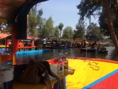
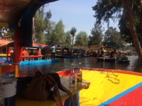

My Weekend in Mexico City
Posted 02/25/18
Day One

When we were flying over Mexico City, it was clear to see how massive it was. It felt like it was spanning on forever, an awe to see. When we ladned at the airport, we opted to take an Uber to our hotel in the Historic District. I suggest taking Ubers while in Mexico City as your method of transportation. The Ubers were cheap when compared to US prices, however, the metro is about 25 cents if you're on a budget.
When I travel, I like for my plans to feel more fluid... as so... I didn't have anything booked in advanced this weekend. We dedicded to wander around the city first... seeing the cathedral, Templo Mayor, making a pit stop in a coffee shop, really just seeing what the city had to offer. The architecture there is breath taking. The middle photo posted above... that is just a POST OFFICE. Like what? Bring back the snail mail days if I can wait in line there.
Day Two

Today we actually had the chance to enter the cathedral.. again, simply breath taking design and artchitecture.
We then headed to Bellas Artes. Taking the advice of some other blogs we read online... we hiked up to the Sears Tower and drank some coffee and enjoyed the wonderful view. We eventually enter the art museum itself. I laugh because... my friend Jessica couldn't understand when the coffee guy asked her for her "nombre", but when I asked the lady why in Spanish I had to wear my backpack on my front side (the opposdite of normal)... she somehow understood "oh, it is because you won't knock the museum items over that way." Girl, you don't know what is your name... but you can interpret this weird pregnant backpack belly thing for me? So! If you are going to visit the museum with a backpack... prepare for the beer backpack belly.

We then decided to go on a tour with aboout 10 other people to see the Pyramids of the Sun and Moon. It fascinates me that their are actually six pyramids within the Pyramid of the Moon. Each with a nice layer of skeletons between them. The pyramids are about an hour outside of the city. There was actually an earthquake (7.2) when we were at the pyramids, however, we were outside of the city so we didn't feel it.
Day Three

 



We took a trip outside a little to Xochimilco. We paid about 600 pesos for two hours on a private boat. We were able to get a mariachi band for 150 pesos to sing for us on our boat and we purchased some snack foods. It's a lot of fun, plus you get to float by the creepy hanging doll island.
You can watch a video of the Artic Bar on my Insagram hereDay Four
We got a little more outside of the historic district.
Lastly, we tried an AirBNB experience for the Lucha Libre wresting match. We went to this guys house with a group of other people. We learned a bit about the history of Lucha Libre and then had the chance to make our own. Now... it looks like crap, like your next new nightmare... but we had a lot of fun in the process. The show itself is an experience.
You can watch a video of the Lucha Libre on my Instagram here